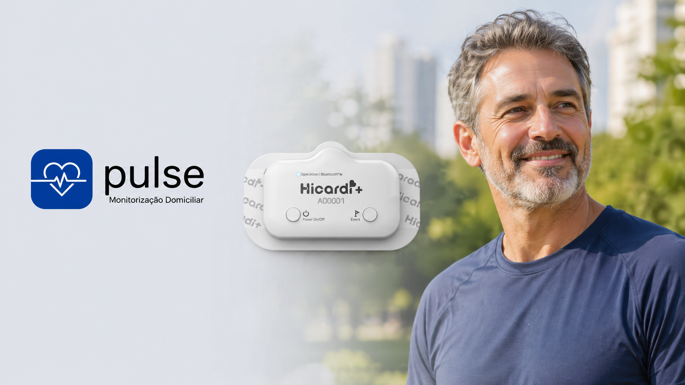
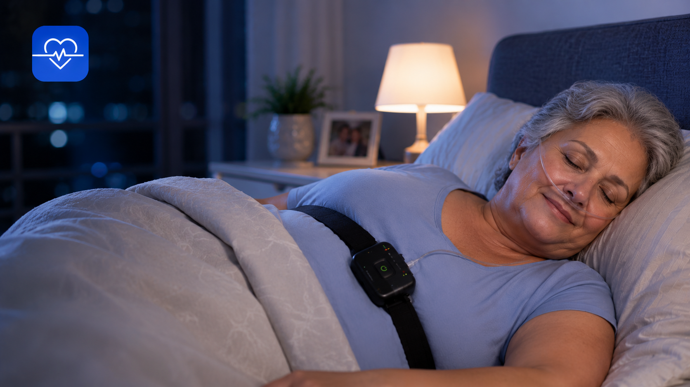
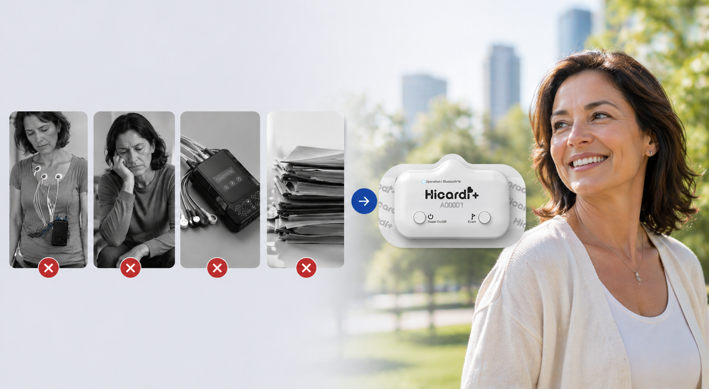
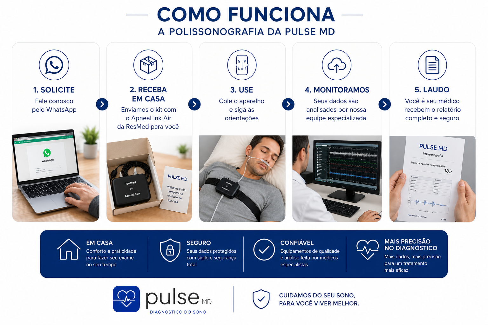
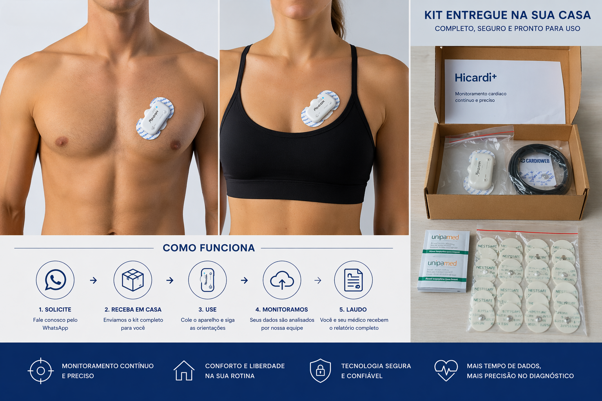
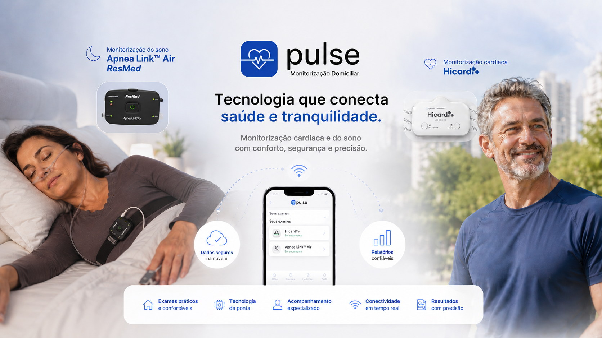

Canal ECG

Monitorização Cardíaca Domiciliar
Monitorização cardíaca prolongada com telemetria em tempo real, acompanhamento especializado e maior possibilidade de identificação de arritmias intermitentes.
Saiba maisMonitorização domiciliar · coração e sono
Realizamos monitorização cardíaca prolongada e polissonografia domiciliar utilizando tecnologia avançada e acompanhamento especializado, em todo o território nacional.
5.0 no Google5 avaliações · ver perfilde registro contínuo
para a entrega do laudo
atendimento em todo o país
A PulseMD realiza monitorização cardíaca prolongada, com registro contínuo de até 7 dias e telemetria em tempo real, e polissonografia domiciliar para investigação de apneia do sono. O paciente faz o exame na própria casa, mantendo a rotina e o sono habituais, com acompanhamento de especialistas durante todo o período. O laudo é elaborado por médico especialista e entregue em até 7 dias úteis, com atendimento em todo o Brasil.
01 · Especialidades

Monitorização cardíaca prolongada com telemetria em tempo real, acompanhamento especializado e maior possibilidade de identificação de arritmias intermitentes.
Saiba mais
Polissonografia domiciliar com tecnologia ResMed para investigação de apneia do sono, ronco e distúrbios respiratórios do sono.
Saiba mais
02 · Exames mais completos
Alterações cardíacas e distúrbios do sono podem ocorrer de forma intermitente, o que significa que exames rápidos ou realizados em um único momento podem não registrar essas variações importantes.
A monitorização prolongada aumenta significativamente a chance de identificação dessas alterações. Ao realizar o exame no ambiente habitual do paciente, geramos informações muito mais representativas da rotina real, proporcionando uma avaliação mais representativa e humana.
Com a PulseMD, você conta com tecnologia avançada e acompanhamento especializado durante todo o processo, reunindo dados completos sem a necessidade de deslocamentos desnecessários.
03 · Como funciona
A PulseMD foi criada para tornar exames especializados mais acessíveis, permitindo que pacientes realizem monitorizações cardíacas e do sono no ambiente onde vivem, trabalham e dormem.
Tudo começa com um contato rápido pelo WhatsApp. Nossa equipe realiza o atendimento inicial e envia um orçamento de acordo com a sua cidade, em todo o Brasil.
Após a confirmação, você recebe o equipamento indicado para o exame solicitado, acompanhado de suporte especializado e instruções completas para uma instalação simples.
Durante a monitorização cardíaca, o dispositivo envia informações continuamente para uma plataforma segura, permitindo acompanhamento especializado durante todo o período do exame.
Um especialista acompanha todo o processo, cuidando da qualidade dos dados coletados. Ao final, seu exame é avaliado por um médico especialista e o laudo é entregue em até 7 dias úteis.
A polissonografia domiciliar avalia parâmetros respiratórios, oxigenação, frequência cardíaca e outros indicadores importantes durante uma noite completa de sono, no ambiente habitual do paciente.


04 · Soluções
05 · Indicações

06 · Na sua rotina
Realizar o exame em casa proporciona muito mais conforto e permite registrar situações reais do seu dia e da noite. Isso melhora significativamente a representatividade clínica das informações obtidas, auxiliando em uma avaliação mais completa.
07 · Instalação
Veja como a instalação é simples e pode ser realizada em poucos minutos, com orientação da nossa equipe sempre que necessário. Assista ao vídeo e veja como funciona na prática.
Nossa equipe ajuda a identificar qual exame pode ser mais adequado para sua situação clínica.
08 · Para médicos
A PulseMD atua em parceria com médicos e clínicas em todo o Brasil, oferecendo monitorização domiciliar, acompanhamento durante todo o exame e laudos elaborados por especialistas, permitindo uma investigação diagnóstica mais completa.
Nossa estrutura foi desenhada para integrar tecnologia e suporte clínico, para que o médico solicitante tenha em mãos dados de alta qualidade e representatividade para a melhor tomada de decisão.
Sou médico ou clínica09 · Confiança
10 · Cobertura
Nosso atendimento domiciliar já está disponível em todo o Brasil, do Sul ao Norte do país.
Consulte a disponibilidade e o prazo para a sua cidade através do nosso atendimento.
5.0 · 5 avaliações no Google — ver perfil11 · Dúvidas
Pode acontecer. O Holter de 24 horas registra apenas um dia, e arritmias intermitentes podem simplesmente não ocorrer nesse intervalo. Quando os sintomas são esporádicos, ampliar a janela de registro para vários dias aumenta a chance de capturar o evento no momento em que ele acontece.
A diferença está no tempo de registro e na tecnologia. O Holter convencional grava 24 horas e só é analisado depois. A monitorização prolongada acompanha o paciente por até 7 dias, com telemetria em tempo real, o que permite verificar a qualidade do sinal e acompanhar o exame enquanto ele ainda está em curso.
A investigação costuma ser indicada para quem ronca com frequência, sente sonolência excessiva durante o dia, acorda cansado ou tem despertares repetidos à noite. Também é considerada em pacientes com hipertensão de difícil controle, obesidade ou fibrilação atrial, já que a apneia do sono é comum nesses grupos. A indicação final é sempre médica.
O laudo é elaborado por médico especialista e entregue em formato digital em até 7 dias úteis após o fim do exame e a devolução do equipamento. Durante a monitorização cardíaca, a equipe acompanha a qualidade do sinal, o que reduz a chance de precisar repetir o registro por falha técnica.